The coach’s Ledger at 390px, with Date set to Whole season as in your screenshot. Every frame is the live page, captured at true size; the right-hand frames are the same page with the change applied. Each numbered marker opens its decision.
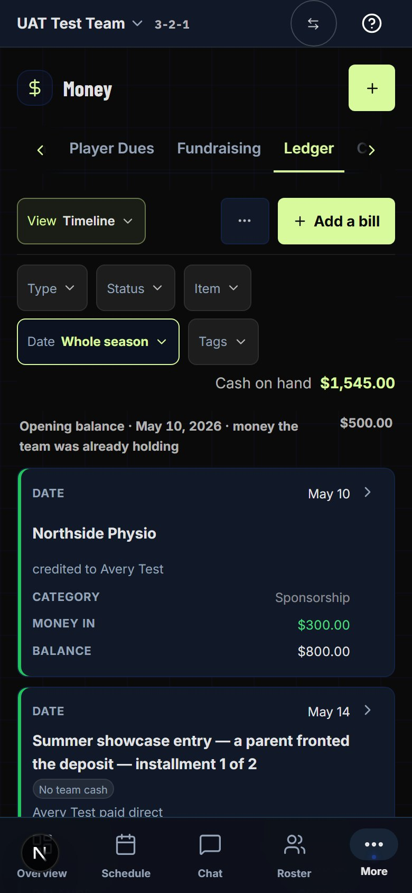
Lit pills are the ones moved from where they rest. Status rests on Actual + Overdue, so it reads quiet.
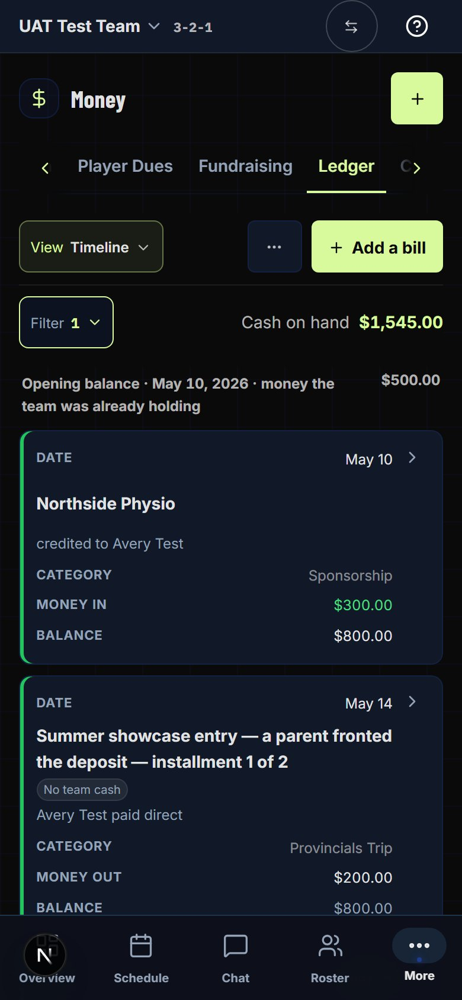
FilterNew Cash on handMoved View · Tools · Add a billUnchanged
Both frames scrolled 760px down the same Ledger. The Ledger toolbar sticks under the team bar at every width, so on a phone its height is taken from the list for as long as the coach is reading. This is the reason the change is worth making.
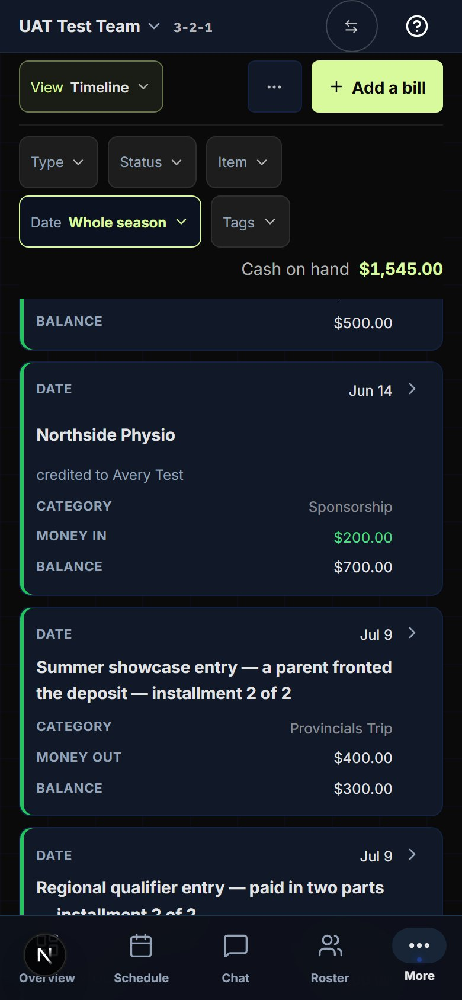
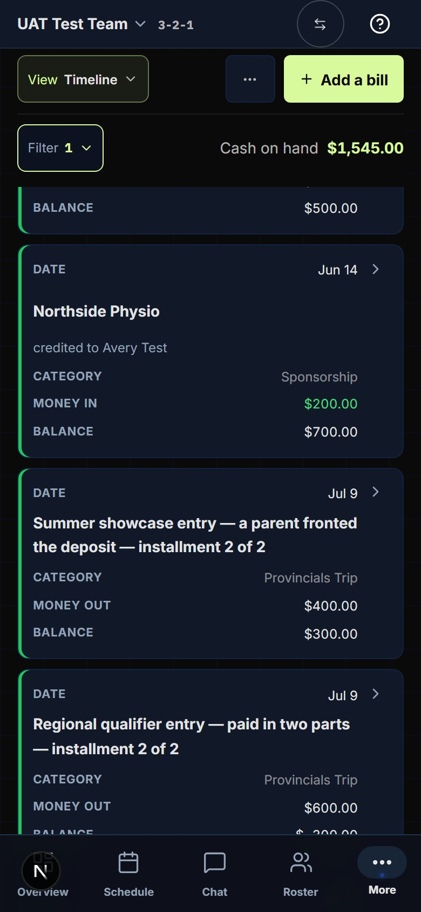
The same sheet Tools opens today, with the same handle, title and rows. Each row says what that filter is set to, so the whole state reads at a glance, as the five pills did. Tapping a row opens its choices in place, the same checkboxes the pill shows today. The list behind updates as you tick.
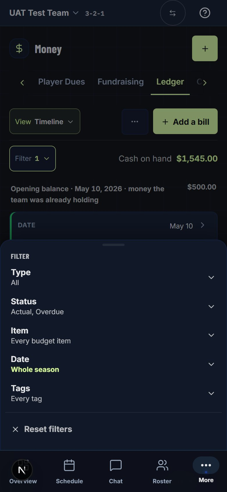
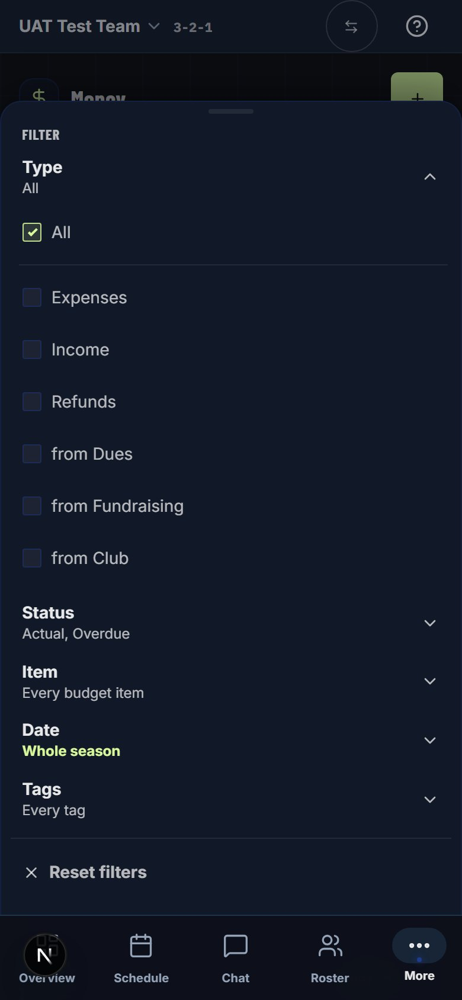
The sheet grows to fit the open row. The longest one (Item, on a team with many budget items) scrolls inside the sheet.
This is how the tournament Teams filter menu is laid out: each filter’s name as a heading, with all its choices under it. It saves a tap, but with five filters the sheet runs 1,562px, about two screens of scrolling. And nothing in it says at a glance what is narrowed. Drawn so you can compare the two.
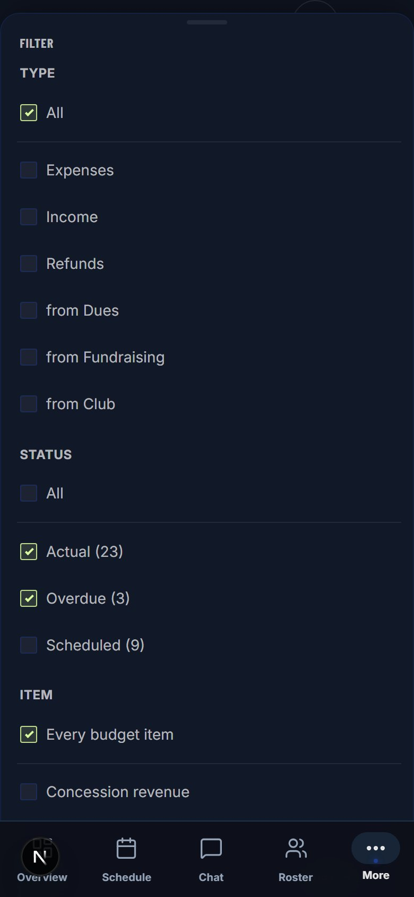
The club’s Ledger has four filters (Type, Status, Category, Date). At 390px they fit one line, but Balance sits on a line of its own, and its toolbar does not stay pinned. So the club gains less: one line, not three. It changes anyway so the two Ledgers keep working the same way. The UAT club’s book has nothing in October, so its list is empty in both frames.
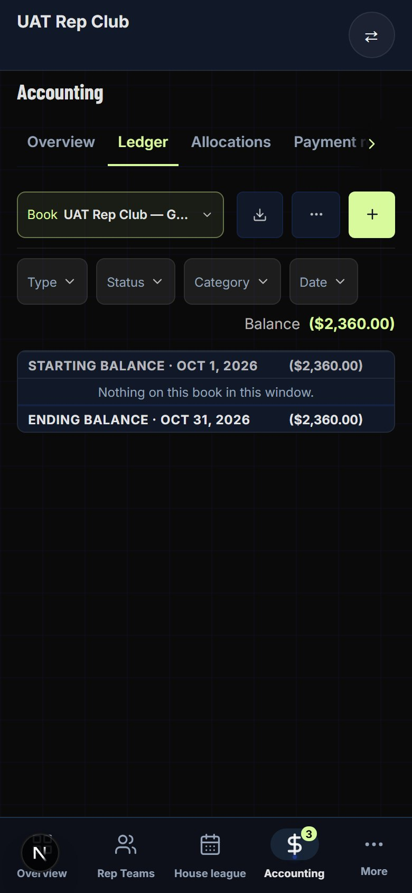
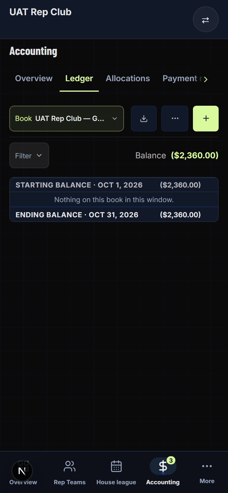
The change is how the filters are reached on a phone. What they do does not change.
| Thing | On a phone after the change | Why it stays |
|---|---|---|
| A desktop or tablet | Unchanged: the five pills, on both Ledgers | They fit one line there, and seeing every filter at a glance is why they became pills (decision 1) |
| The filters themselves | The same choices, the same counts, the same resting states | The sheet shows the pills’ own choices; only the way in changes |
| View, Tools, Add a bill | Unchanged, on the top line | View is how the list is arranged, not a narrowing, so it stays out of Filter |
| Cash on hand | Same figure, same rule, one line higher | A narrowed Type still takes it away; the date never does |
| Export | Exports what is showing, filters included | Unchanged on both Ledgers |
| The Bills and Payment schedule views | Their own filters (Status, Item, Tags) go behind the same button; Open all / Fold all stays beside it | One toolbar in every view: the button stays put when the coach switches views |
Captured from the dev server after the build, at 390px in Warm, driven by touch. Set to rest, then Date on Whole season and Scheduled ticked, as in the walk. Thirteen checks passed in the same run: the pills hidden and one button shown, Cash on hand and Open all on the button’s line, the five rows and their values, the count, Reset back to rest, a tap on the dim pressing nothing, Escape returning to the button, a two-line toolbar at 360px, and both desks unchanged.
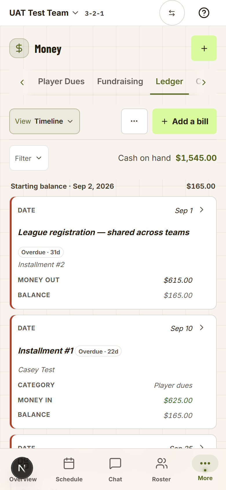
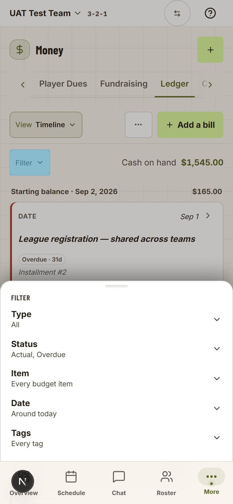
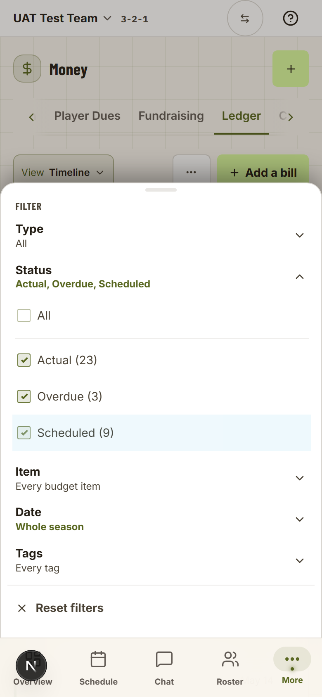
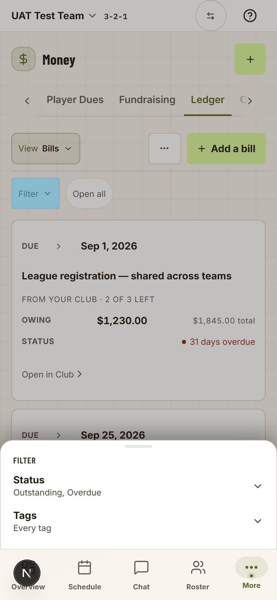
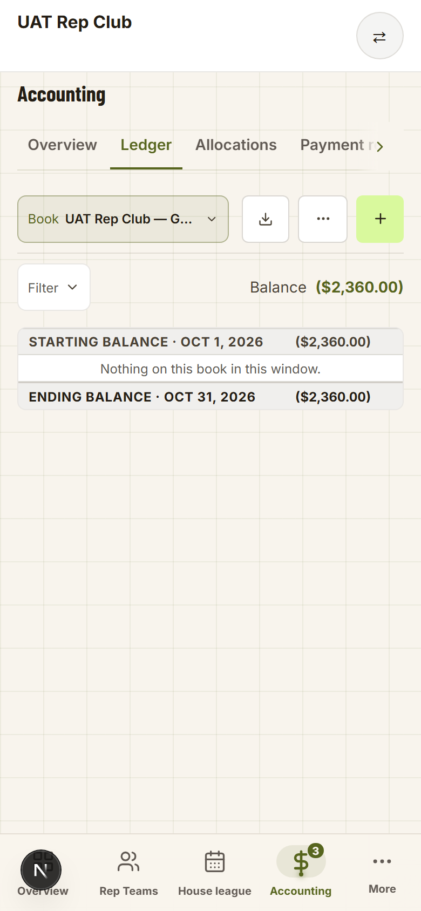
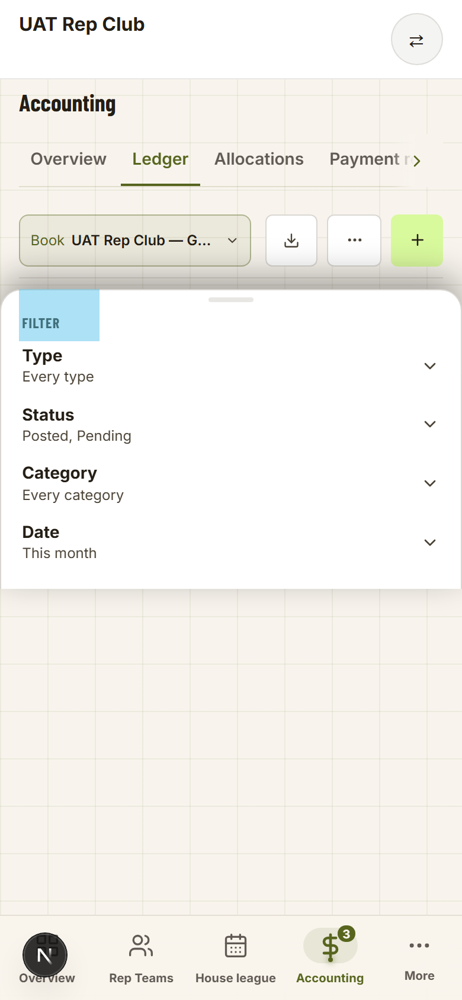
The light blue on a tapped control is the phone’s own tap flash, caught by the capture; it fades, and no control in the app suppresses it.
Owner, 2026-10-02: “I agree with your recommendations, go ahead.” Each marker on the Mockup tab opens its decision here.
Below the phone width the five filter pills on the coach’s Ledger go behind one Filter button, which opens a sheet. A desktop or tablet keeps the pills.
Recommended. The toolbar stays pinned while the coach scrolls, so on a 390px phone the filters cost 207px of every screen. A single Filter button was drawn and declined for this Ledger before, at desktop size. The reasons were a tap between the coach and every filter, and the filters’ state hidden behind a count. Both still hold on a desktop, where five pills fit one line. On a phone, three pinned lines cost more than the extra tap. The tournament Teams page already uses one Filter button, and the Ledger’s own Tools button already turns into a sheet on a phone.
Alternative: the Filter button at every width, as on tournament Teams. Not recommended: a treasurer reconciling at a desk benefits from seeing every filter.
The sheet lists the filters as rows, each with what it is set to (“Status · Actual, Overdue”). Tapping a row opens its choices under it; one row is open at a time.
Recommended. The rows show the whole state in five lines (361px), which is what the pills did on the toolbar. The cost is one more tap: Filter, the row, the choice.
Alternative (screen 4): every filter’s choices open under a heading, as tournament Teams does with its two short filters. It saves a tap, but with five filters it runs 1,562px, about two screens, and the state is spread across all of it.
The button lights up and shows a number only for filters away from their resting state. Status resting on Actual + Overdue is not counted; Date on Whole season is. A Ledger opened fresh reads a quiet Filter.
Recommended. It is the rule the pills already follow: a pill lights up only when it narrows something new. Counting Status at rest would make every Ledger read “Filter 1” on its first visit, and the number would mean nothing.
As today, a chosen date range (not a custom one) is remembered for the team, so the coach can come back to a Ledger already on Whole season.
Recommended. On tournament Teams, filters behind the button are not remembered. That ruling’s reason was that a filter turns the board into a list and nothing on screen says why. That does not apply here: the lit “Filter 1” says the list is narrowed, and the sheet says by what.
Alternative: on a phone, the Ledger always opens with every filter at rest. Simpler, but a coach who works on Whole season sets it again on every visit, and a desktop and a phone would remember differently.
The club’s Ledger takes the same button and sheet on a phone, listing its own four filters.
Recommended. The two Ledgers were just agreed to read the same, and changing only the coach’s would undo that. The club gains less (one line, and its toolbar is not pinned), but the cost is small: the pills and the sheet are shared between the two.
A “Reset filters” row closes the sheet’s list, shown only while the button is lit. It puts every filter back where it rests: Status to Actual + Overdue, Date to Around today. It does not clear everything to “All”.
Recommended. Same words and the same rule as tournament Teams. Resetting to the resting state keeps Scheduled out by default, which was decided deliberately for this Ledger.
Ticking a choice changes the list behind the sheet straight away. The coach closes the sheet by tapping outside it, as with Tools today.
Recommended, so the portal keeps one way of closing a sheet. Risk: with a long filter open, the sheet nearly fills the screen and the list behind cannot be seen. If that feels lost in the walk, the fix is a Done row at the foot, added to both sheets.
On a phone, the Ledger’s filters (Type, Status, Item, Date, Tags on a team; Type, Status, Category, Date on the club) move behind one Filter button. The button opens a sheet listing each filter and what it is set to; tapping one opens its choices. The button lights up with a count when anything is narrowed. Cash on hand (Balance, for the club) moves up beside the button. A desktop keeps the pills.
The coach’s Ledger toolbar stays pinned while the coach scrolls. On a phone it is two or three lines of filters tall, so a coach reading the season’s money sees the list through a slot. The change gives the list 79px more on every screen at 390px (520px to 599px).
Changing a filter takes three taps instead of two, and which filters are on now shows as a number on the button rather than as lit pills. Both were the reasons a single Filter button was turned down for the desktop. On a phone, the space they cost while scrolling outweighs them.
Polish, not a blocker: nothing is broken today. It is a small change, because the five pills and the Tools sheet already exist and are shared by both Ledgers.
The source of record is LEDGER_PHONE_FILTER_PLAN.md beside this hub; this tab carries its decisions and its build record.
On a phone the coach’s Ledger showed its five filter pills on two lines and Cash on hand on a third, inside a toolbar that stays pinned at every width: 207px of a 390px phone with Date on Whole season, 179px at rest. The club’s Ledger has four pills that fit one line, but its Balance dropped to a line of its own.
No migration, no data change; the date range is remembered in the browser exactly as before. Ships with the next promote.
Two walks, one job each, signed off one by one. Tick as you go; the ticks stay in this browser. Build a summary at the bottom and paste it back into the chat.
UAT_COACH_PASSWORD in .env.local) · UAT Test Team, UAT Rep Club. The account may land on another team: switch first.UAT_REP_CLUB_TREASURER_PASSWORD) · UAT Rep ClubOn a phone the coach’s five filter pills took two pinned lines and pushed Cash on hand to a third. They are now one Filter button that opens a sheet: one row per filter, each saying what it is set to.
The toolbar is two lines on every view; the sheet shows every filter with its value; the button counts only filters you changed; Reset puts them back to their resting choices; a tap outside closes the sheet and presses nothing.
The club’s Ledger and the desks (W2).
On a phone (or a window about 390px wide), sign in as the coach, switch to UAT Test Team and open Money → Ledger (View Timeline).
Two lines above the list: View Timeline · ⋯ · + Add a bill, then a quiet Filter ▾ on the left and Cash on hand on the right. No Type, Status, Item, Date or Tags pills.
Tap Filter.
A sheet rises from above the bottom bar, titled FILTER, with five rows, each saying what it is set to: Type All · Status Actual, Overdue · Item Every budget item · Date Around today · Tags Every tag. No Reset filters line. The list is dimmed above it.
Tap Date, then Whole season.
The Date row folds shut and reads Whole season in the lit (olive) colour. The sheet stays open. The button behind reads Filter 1 and is lit. Reset filters appears at the foot.
Tap Status and tick Scheduled.
The Status row stays open with its three choices, each with its count in brackets. It reads Actual, Overdue, Scheduled in the lit colour, and the button reads Filter 2.
Tap the dimmed list above the sheet.
The sheet closes and nothing under your tap opens. The list now starts with the season’s first line (Opening balance or Starting balance) and includes scheduled entries.
Scroll down the Ledger.
Only the two toolbar lines stay pinned at the top; the cards scroll under them.
Leave for Schedule, then come back to Money → Ledger.
The button reads Filter 1: the date range is remembered for the team, as it always was, and Status is back on its resting choice (it never was remembered). Open the sheet: Date reads Whole season, Status Actual, Overdue.
In the sheet, press Reset filters.
The sheet closes and the button reads a quiet Filter. Open it again: Status is back on Actual, Overdue and Date on Around today (their resting choices, not “All”). Close it.
Switch View to By bill.
The second line reads Filter on the left and Open all (or Fold all) beside it. The sheet lists Status and Tags (and Item if the team’s bills have budget items). Switch View back to Timeline: the Ledger remembers the view too.
Switch to Dark and repeat steps 1 to 3.
Everything reads clearly; the lit Filter button and the lit row value stand out on the dark ground. Reset filters before you finish.
The club’s Ledger gets the same button and sheet, with Balance on its line. On a desk neither Ledger changes.
The club’s phone toolbar shows Filter and Balance on one line and the sheet lists its four filters; both desks show their pills exactly as before.
The coach’s phone (W1).
On a phone, sign in as the club treasurer and open Accounting → Ledger.
Under the Book line: a quiet Filter ▾ on the left and Balance on the right, on one line. No Type, Status, Category or Date pills.
Tap Filter.
The same sheet, titled FILTER: Type Every type · Status Posted, Pending · Category Every category (when the book has categories) · Date This month.
Tap Date, choose All time, then press Reset filters.
Choosing All time folds the row, lights it and makes the button read Filter 1. Reset puts Date back on This month, closes the sheet, and the button reads a quiet Filter.
On a desk (a wide window), open the club’s Accounting → Ledger.
The four pills (Type, Status, Category, Date) and Balance, exactly as before. No Filter button.
On a desk, sign in as the coach and open Money → Ledger; open the Status pill.
The five pills on one line with Cash on hand at the right, exactly as before; Status opens its checkbox list under the pill. No Filter button.
Tick steps as you walk, press a verdict, then build a summary and paste it into the chat.